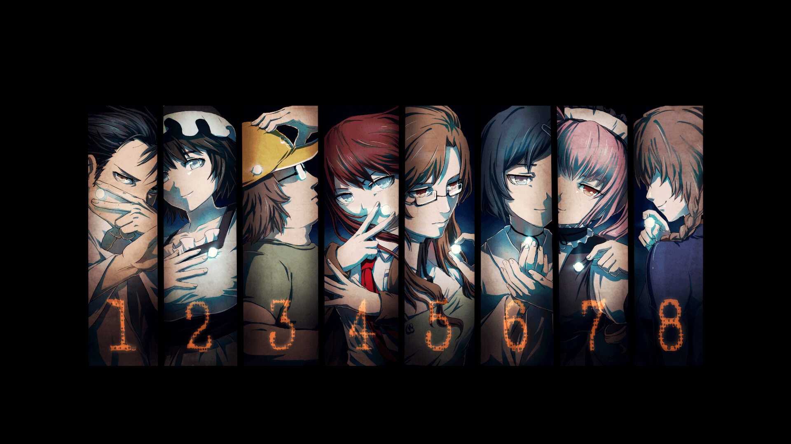
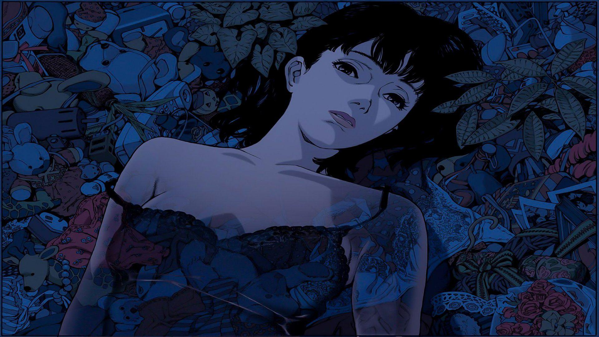
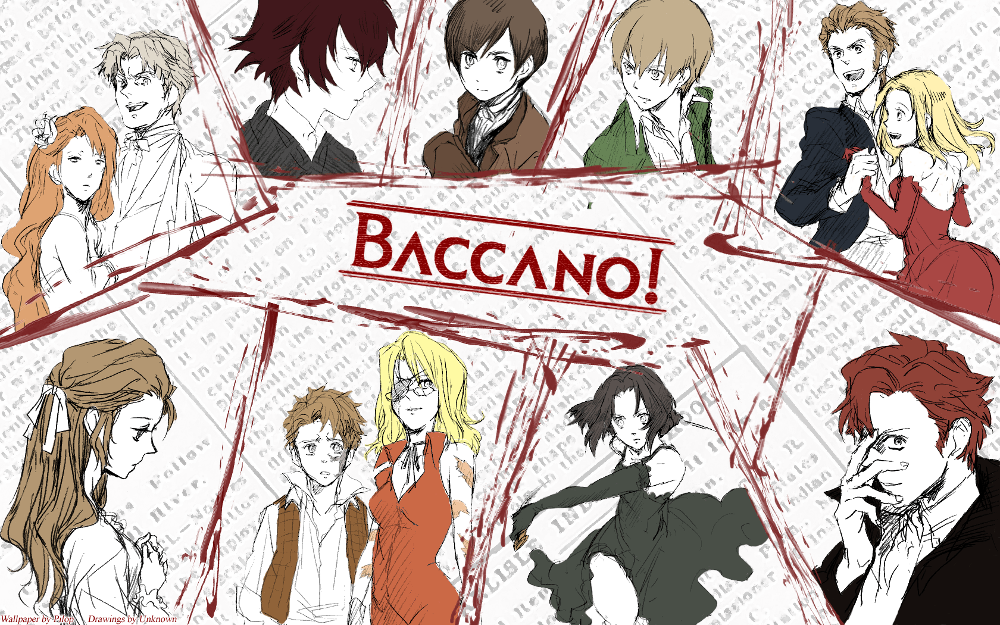
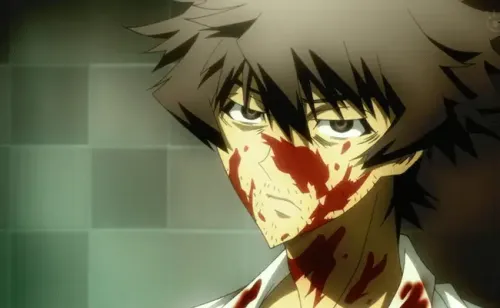
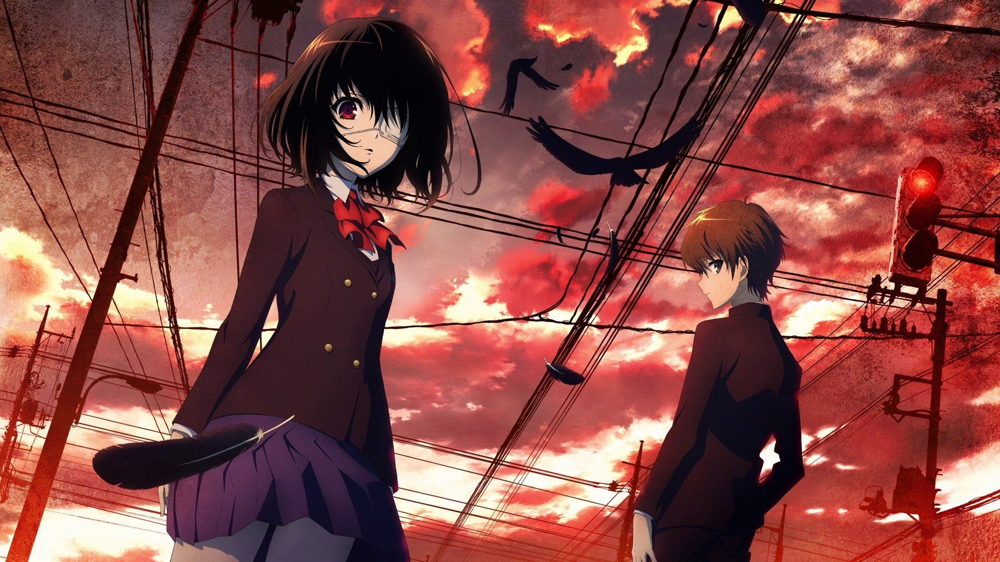
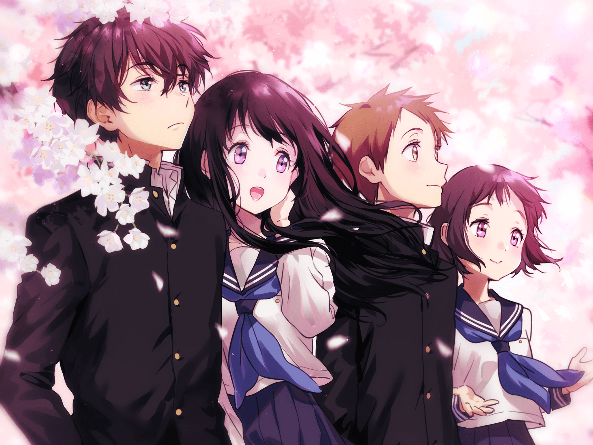

Death Note
Studio: Madhouse
Episodes: 37
Status: Completed
Summary: A high school student discovers a mysterious notebook that allows him to kill anyone by writing their name in it. As he seeks to create a utopia free of crime, a brilliant detective challenges him.
As the cat-and-mouse game unfolds, will the lines between justice and revenge blur?

Steins;Gate
Studio: White Fox
Episodes: 24
Status: Completed
Summary: A group of friends accidentally invents a time machine, leading to unforeseen consequences as they try to manipulate time.
But as they tamper with fate, will they uncover secrets better left forgotten?

Paranoia Agent
Studio: Madhouse
Episodes: 13
Status: Completed
Summary: A series of mysterious attacks by a figure known as "Lil' Slugger" sparks a media frenzy, leading to a psychological exploration of fear and paranoia.
As investigators dig deeper, will they uncover the truth behind the terror?

The Promised Neverland
Studio: CloverWorks
Episodes: 12
Status: Completed
Summary: Orphans at a seemingly perfect orphanage discover a dark secret that leads them to plan their escape from a sinister fate.
Will their intelligence and courage be enough to outsmart their captors?

Perfect Blue
Studio: Madhouse
Episodes: 1 (Movie)
Status: Completed
Summary: A retired pop idol turned actress becomes the target of an obsessive fan, leading her into a psychological thriller filled with paranoia and identity crisis.
As her reality begins to blur, will she unravel the truth before it's too late?

Ghost in the Shell
Studio: Production I.G
Episodes: 52
Status: Completed
Summary: In a futuristic world, a cybernetic government agent investigates crimes involving advanced technology and human consciousness.
As she delves deeper, will she find answers or lose her own identity?

Baccano!
Studio: Brain's Base
Episodes: 13
Status: Completed
Summary: Set in the early 1930s, various characters collide in a series of interwoven events involving alchemy, immortality, and murder.
Can they survive the chaos, or will their fates intertwine in unexpected ways?

Shiki
Studio: Daume
Episodes: 22
Status: Completed
Summary: In a small village, a series of mysterious deaths lead to the discovery of a horrifying secret about the nature of the living and the dead.
As darkness spreads, who will survive the nightmare?

The Case Files of Jeweler Richard
Studio: Shuka
Episodes: 12
Status: Completed
Summary: A jeweler and his apprentice solve various cases related to jewelry, uncovering hidden truths about their clients and their pasts.
As they delve deeper into the world of gems, what mysteries will they reveal?

Another
Studio: P.A. Works
Episodes: 12
Status: Completed
Summary: A new student transfers to a school plagued by a series of mysterious deaths and discovers a terrifying secret about his classmates.
As the body count rises, can he uncover the truth before it's too late?

Hyouka
Studio: Kyoto Animation
Episodes: 22
Status: Completed
Summary: A high school student with a love for the mundane finds himself drawn into various mysteries by his curious classmate.
Can he solve these everyday puzzles, or will he remain apathetic to the wonders around him?